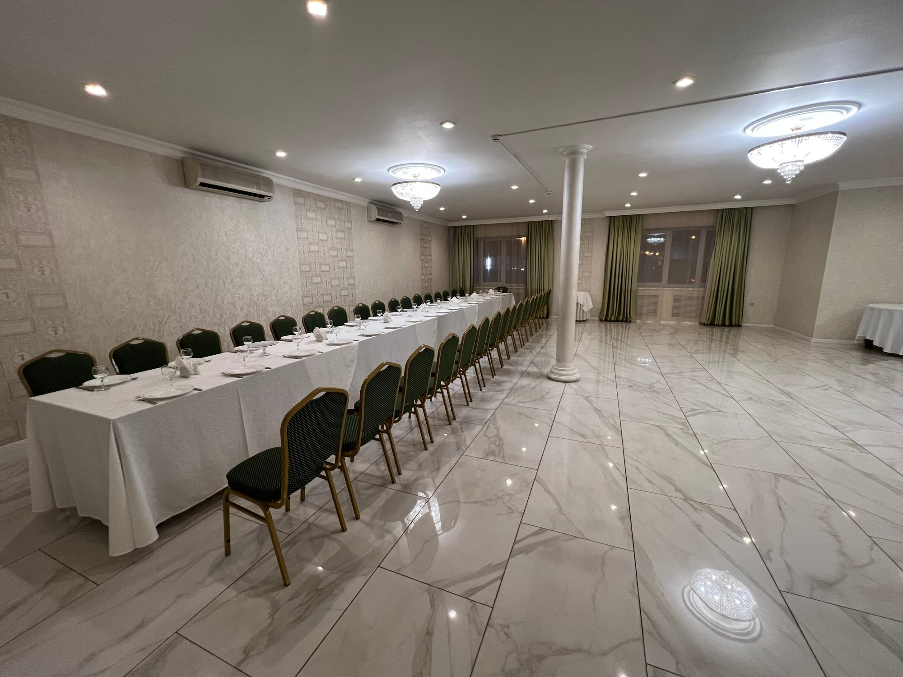

Белый зал
до ___ гостей
Большой светлый зал. Столы ставят длинными рядами или отдельно — по числу гостей.

Большой зал до 100 гостей и небольшие залы для самых близких. Посторонних за соседними столами не будет.
Позвоните или напишите в WhatsApp. Администратор пришлёт варианты меню и фото залов, а к вашему приходу стол будет накрыт.

Назовите дату, время и сколько будет гостей.
Администратор пришлёт в WhatsApp варианты меню с ценой на человека и фото залов.
Стол будет накрыт к вашему приходу. От крематория можно дойти пешком.
Каждой семье — отдельный зал. Администратор подберёт его по числу гостей.
до ___ гостей
Большой светлый зал. Столы ставят длинными рядами или отдельно — по числу гостей.


до ___ гостей
Для обеда в кругу родных и коллег. За соседними столами не будет чужих людей.


до ___ гостей
Отдельные комнаты, когда гостей немного: семья и самые близкие.


Фото — с вашей карточки на Яндекс Картах. На сайт можно поставить любые ваши фото.
Юбилеи, дни рождения и встречи семьи — в тех же залах. Напишите дату и число гостей, администратор пришлёт банкетное меню.
Если вашего вопроса здесь нет, задайте его администратору по телефону.
Обед часто заказывают меньше чем за сутки. Позвоните — администратор скажет, успеют ли накрыть к вашему времени.
Пару минут пешком, гости могут дойти без машины.
Администратор пришлёт в WhatsApp несколько вариантов меню с ценой на человека — выберете подходящий.
Уточните у администратора условия для вашей даты.
Вход и зал доступны на коляске, есть парковка для людей с инвалидностью.